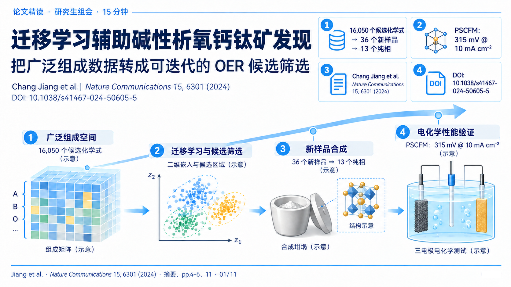
S01 · 迁移学习辅助碱性析氧钙钛矿发现opening · 30 秒 · 1672×941SHA-256
d4116828c1319ef336b7e7640e89f059a1cc7fa01baabccc81009b61c2e4da08无原始数据面板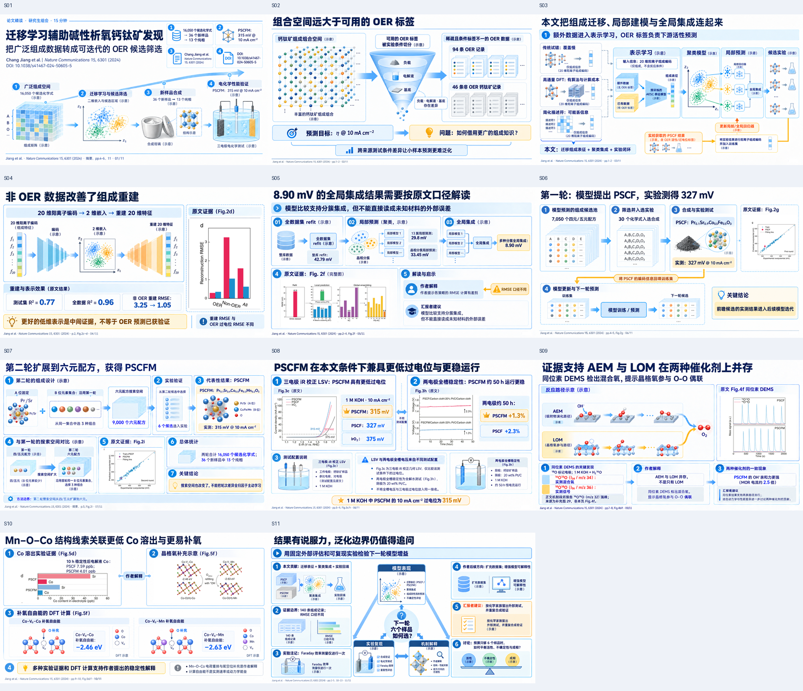
SHA-256 与来源面板 manifest主审记录15 分钟讲述提纲完整概念规格确定性合图映射

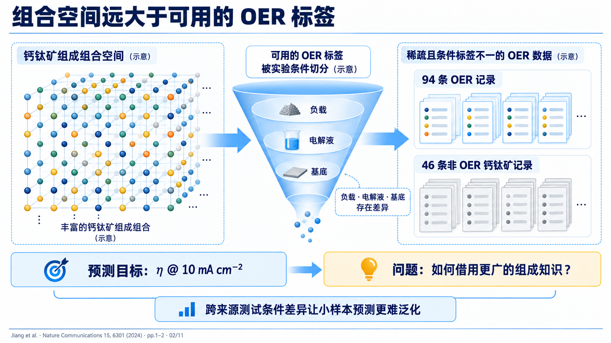
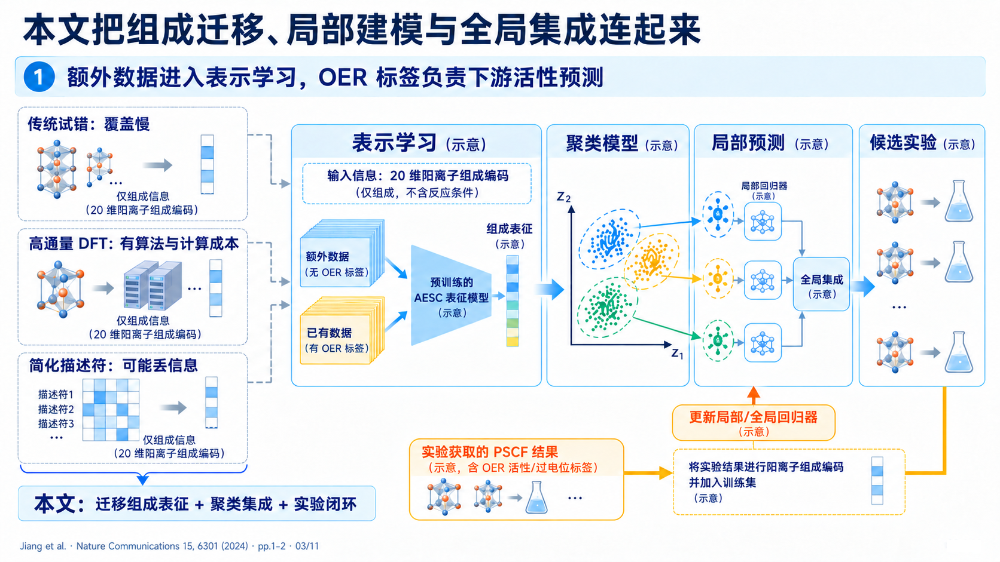
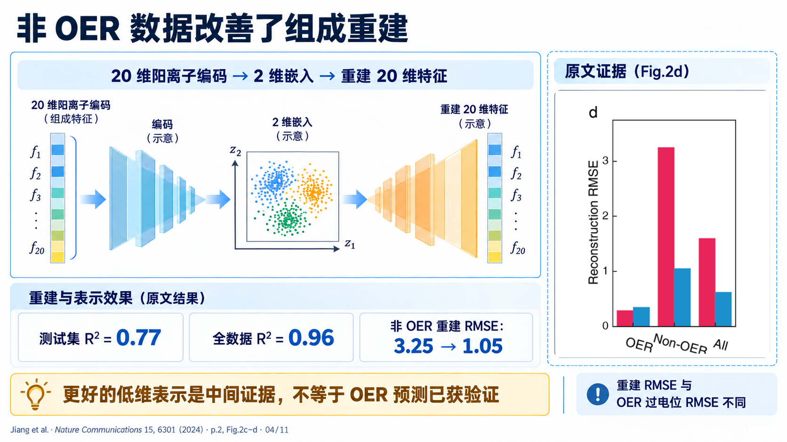
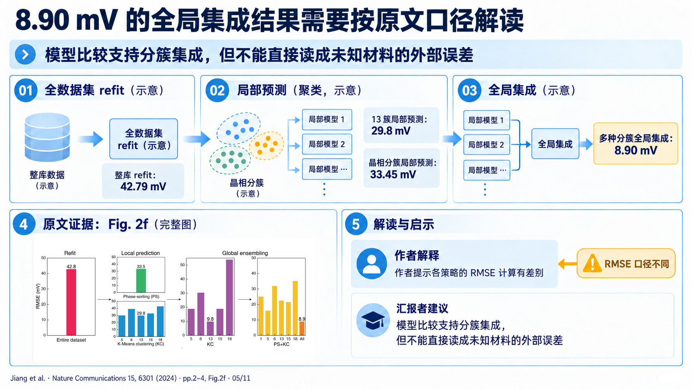
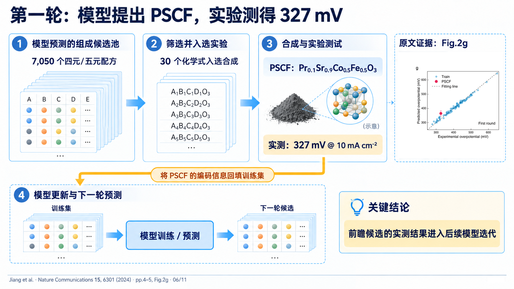
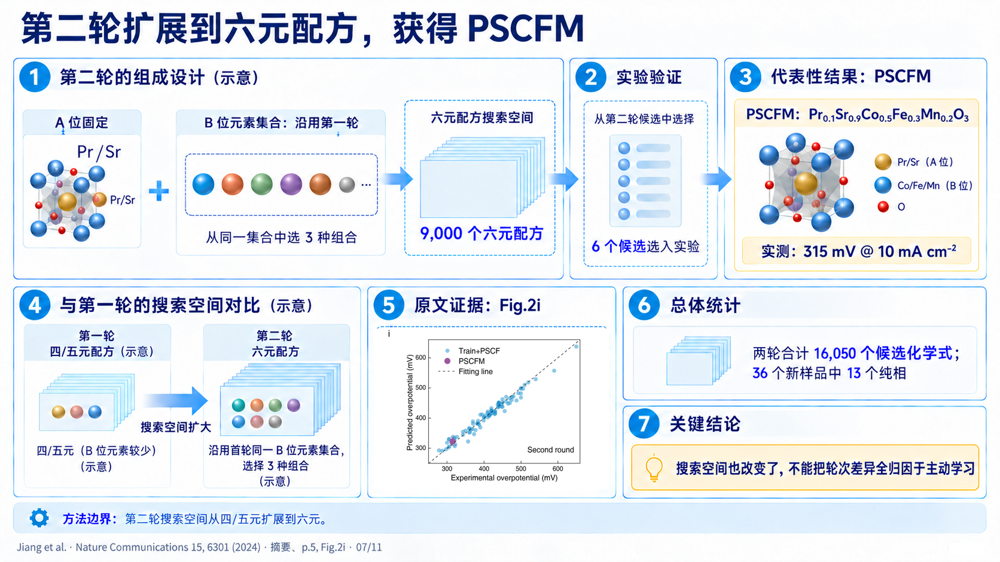
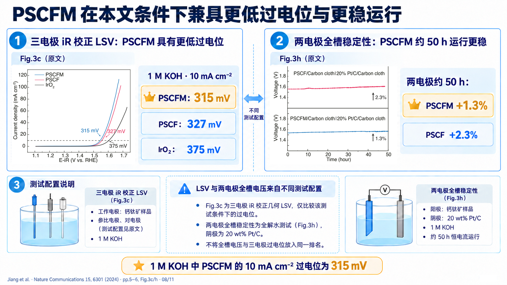
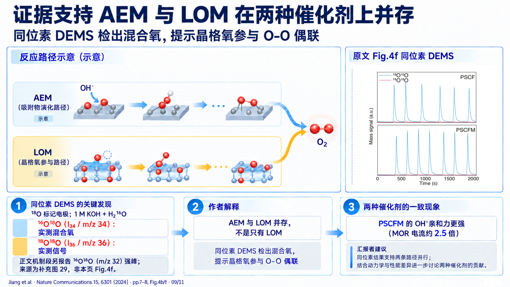
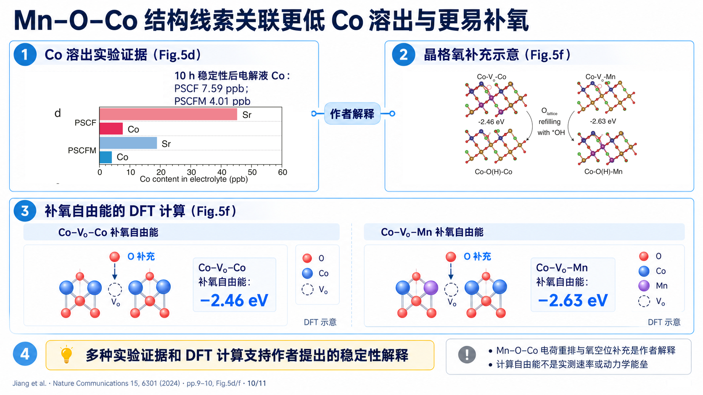
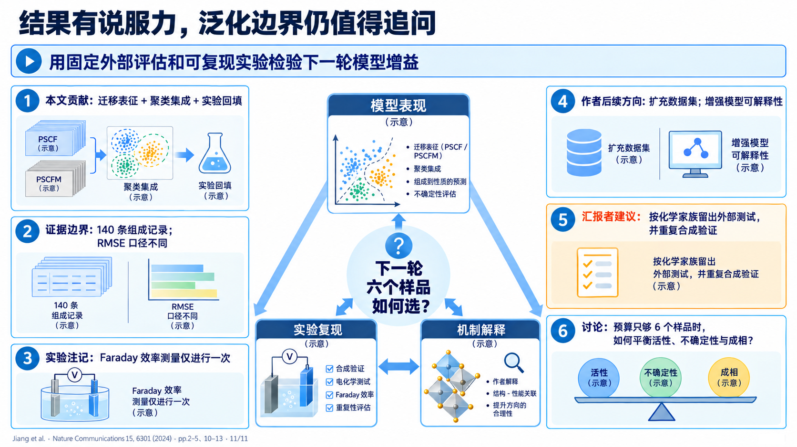
fig2d fig2f fig2g fig2i fig3c fig3h fig4f fig5d fig5f
来源 PDF 哈希：41d9a7845ca800b9cf0f6b3d3c96d2da29d5074d95634546a2f7286bad8b2c8a · 原始面板按 PDF 直接裁切；面板与整页输出哈希由 final-manifest.json 记录。